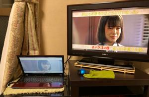
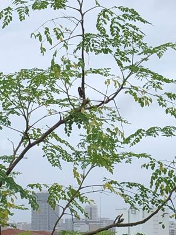
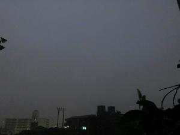
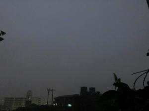

うるがいの話 ある日
最新:
線状降水帯
うるがいとは 前提知識です
カニの画像をクリックすると『うるがいの話』サイトを表示します

うるがい(ｳﾙｶﾞｲ urugai)とは、『もずくがに』の名前でとても大きくなります。

たながー（ﾀﾅｶﾞｰtanagaa）とは手長えびのことで、何種類かあり大きいのは車
エビぐらいになります。

ぶながー(bunagaa)とは、赤い髪の毛、赤い身体、そして身長は１ｍ２０ｃｍ
ぐらい、川の蟹を食べているの目撃された。場所は沖縄県国頭郡大宜味村のと
ある村僕の隣近所に住んでいる爺さんから、聞いた話です。
2021年06月29日 (火）線状降水帯
16:46


 

明け方から雷とともに雨が降っている。朝の５時、稲妻を撮りたくてスマホを
持って窓にくっつくと窓が雷音で振動するのが分かる。あまりにも雨が強いの
で、日課であるヨメのお母さんへの弁当の差し入れは、中断することになった
外に出ていなので分からないが通勤、通学は大変だ。気候は明らかに悪い方向
へ向かっている気がする。連続ドラマ「ドラゴン桜」の最終回を見たので東大
の話を少し、職場に東大卒が二人、役員に一人いた。いずれも賢く仕事はでき
た。まだ、若い職員は辞めなければ、いずれ役員までいくのだろうと一緒に働
いた時は感じた。余談だが、世の中にはネットで探した
『汚部屋そだちの東大
生』
スゴイ人がいる！。
テレビはリアルの放送はコマーシャルなど時間に縛られるので録画で見る。録
画した最終回をみていると、ん！、あと１０分程ある筈だが・・、録画が途中
で終わってしまった。録画の予約の仕方に問題があったようだ、でもその続き
はパソコンで無料動画サービスＧＹＡＯ！(ギャオ)でみることができた、諦め
ない心が大事だ。もう一つ、ハマってみていたプレミアムドラマ「定年女子」
再放送、最終回が録画されていなかった！。お金を出せば見れるが、・・・や
っぱりもったいないので止める、諦める心も大事である。
６月２９日はバイクの免許をとった日である。これで若葉マークが解除、うふ
ふふ、後部座席に人も載せ運転する事ができる。あっというまの一年だった。